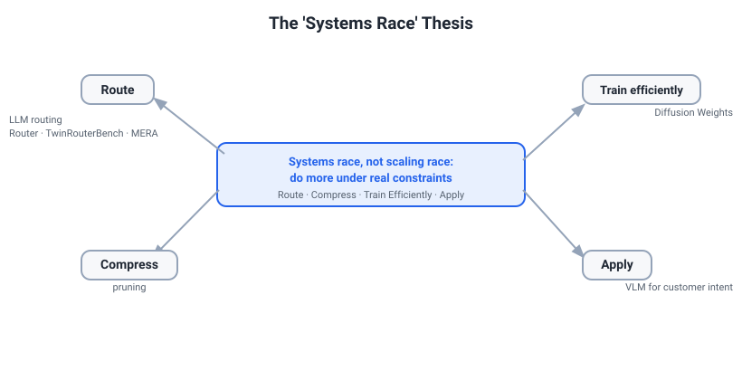

Final-Hours Must-Read — Everything Essential in One Page
If you read one page in your last hours, read this. It pulls the non-negotiables from across the whole pack into one screen-flow: the Kill List, your byline and venue cards, the say-it-cold numbers, the cross-paper thesis, the highest-probability technical answers, the eBay rapport hooks, and a final-hour checklist. Everything here is cross-checked against the Kill List and the PDF-verified Own Papers — Ground-Truth Defense. If a number is not here or in those two, do not say it cold — lead with the caveat.
1. The non-negotiables (read these first)
This is your safety core. If you read nothing else before walking in, read this. Everything here is PDF-verified; nothing here is invented.
Your 20-second self-positioning
Say who you are in one breath, then plant the thesis.
- Who: "I'm an independent AI researcher in Amsterdam — ex-MSCA fellow at IMDEA, MSc at TU Delft. My work clusters around one idea."
- The thesis (say it out loud): "AI moved from a scaling race to a systems race." Once raw scale plateaus economically, the win is doing more with fixed compute — efficiency, routing, compression, deployment.
- Why eBay: "Your wins are systems wins — a custom e-commerce vocabulary, a small fine-tuned model beating a big zero-shot one. My portfolio is the same instinct from a different angle." Keep it as shared instinct, not a turnkey number.
The cross-paper thesis map

Four angles, one thesis:
- Route per step — TwinRouterBench: which model handles each agent call.
- Adapt the serving policy safely — MERA: change how a fixed model pool is served, gated by replay.
- Compress a trained model — Pruning nnU-Net: 80%+ of weights gone, quality held.
- Cheapen training itself — Diffusion Weights: forecast future weights instead of running SGD.
Reverse Imaging and Eye-Tracking VR show the same instinct — extract the invariant signal instead of collecting more data.
Say-it-cold numbers (one verified headline per paper)
| Paper | Role | The number you can say cold |
|---|---|---|
| TwinRouterBench | 3rd author | Trained router cuts API cost 53.1% vs unrouted Opus (25.66 vs 54.73) at matched 75/100 resolve rate on the dynamic SWE-bench track |
| MERA | co-author | 87.3% router accuracy at 51.8% of always-large serving cost with 4.4% fallback (best four-cycle schedule) |
| Diffusion Weights | author | ~3.2x wall-clock fine-tuning acceleration at comparable downstream accuracy |
| Pruning nnU-Net | first author | >80% of trained nnU-Net weights removed while proxy Dice stays >0.95 across 4 datasets |
| Reverse Imaging | co-author | Zero-shot MOLLI LV Dice 39.9 → 91.6 with no target-domain data |
| Eye-Tracking VR | first author | Periocular+eye-movement fusion lifts cross-session F1 0.54 → 0.70 |
The Kill List, compressed (the highest-value table)
Lead with the caveat; the safe phrasing is the short one. A confident wrong number to the author's colleague is the one fatal move.
| Paper | NEVER say | SAY |
|---|---|---|
| MERA | "87.3% accuracy" / "the agent is 87% accurate" | "87.3% router-decision accuracy on an 832-example held-out set, at 51.8% of always-large serving cost (4.4% verifier fallback)" |
| MERA | "we beat the 89.6% / GPT-4o baseline" | "there is no 89.6% baseline in the paper; the cost baseline is always-large = 100% cost (the paper doesn't name MERA's specific strong model — don't borrow TwinRouterBench's Opus 4.6)" |
| MERA | "degraded mode / specialist deactivated below its gate" | "quality is protected by verifier-fallback (~4.4%) + joint-replay admission — that's the reliability mechanism" |
| TwinRouterBench | "TwinRouterBench cuts cost 53%" | "53.1% is the trained router on the dynamic track vs unrouted Opus, on a 100-case held-out SWE-bench Verified split — TwinRouterBench is a benchmark, not a cost-cutting method" |
| TwinRouterBench | "30-day streaming / ~12,000 queries / regret / distribution-shift" | none of that is in the paper — it's a static track (970 verified step prefixes) + a live dynamic track. Kill the streaming framing entirely |
| LLM Router | "we cut cost >90% on TwinRouterBench" | ">90% is a separate LLM-Router paper — not TwinRouterBench, and not one of my six PDF-verified papers" |
| nnU-Net pruning | "99% sparsity" / "6× speedup" / "Dice >0.95" | ">80% of weights pruned at proxy Dice >0.95 (agreement with the unpruned model); no measured speedup — efficiency is framed as future work. The real finding is the inverted-U redundancy map" |
| Diffusion Weights | "it's not really diffusion / no noise / deterministic MSE" | "it is diffusion: a real Gaussian forward process, a DDPM/DDIM reverse chain, an attention U-Net denoiser — with a non-standard future-epoch x₀ target" |
| Diffusion Weights | "break-even is ~N jobs" | "the speedup is amortized over many related jobs; the paper quantifies no break-even and I won't invent one" |
Byline + venue cheat-card
Name your byline plainly. Own the methodology you can defend, not the project framing.
| Paper | My byline | Corresponding | Real venue / ID |
|---|---|---|---|
| TwinRouterBench | 3rd of 17 (leads: Pei Yang & Wanyi Chen, equal) | Tianyu Shi | arXiv 2605.18859 — not "ACM CAIS / RLEval" |
| MERA | 3rd of 7, co-author | Tianyu Shi | RL-Eval 2026 workshop · OpenReview 6oyBiDMCHs |
| Diffusion Weights | author (paper is anonymized for review) | — | ACL 2026 submission, under review (OpenReview eJmO6GP8DF) — not accepted |
| Pruning nnU-Net | first author | — | MIDL 2025 · OpenReview uTTOhthEDR |
| Reverse Imaging | 4th of 8, co-author | Qian Tao | arXiv 2508.21254 — a preprint, not MICCAI / IEEE-TMI |
| Eye-Tracking Emotion (VR) | co-first (with Bishwas Regmi) | — | ACM IMWUT 2025 · doi 10.1145/3749545 |
Two reflexes that save you
- Wrong-number reflex: "I don't have that figure in front of me — directionally it's …" Versley wrote these papers' neighbors; a confident wrong number is the one fatal move.
- Role-honesty reflex: name your byline position plainly. On TwinRouterBench/MERA you're a co-author, not a lead — own the methodology you can defend (the labeling protocol, the cost accounting), not the project framing.
2. Stage-1 technical rapid-fire (crisp say-it-like-this answers)
This is your spoken-aloud cheat sheet. These are general ML facts — Versley is a pretraining lead who rewards a precise mechanism over a buzzword, so keep each answer tight and load-bearing. No paper numbers live here; for your own papers see their sections.
Metrics
-
Precision vs recall vs F1 vs AUC-ROC. Precision = of what you flagged, how much was right,
TP/(TP+FP). Recall = of what was truly positive, how much you caught,TP/(TP+FN). F1 is their harmonic mean — one number when you care about both. AUC-ROC is threshold-free: the probability a random positive scores above a random negative. E-commerce example: a counterfeit-listing flagger — high precision means few honest sellers wrongly blocked, high recall means few fakes slip through. Imbalance caveat: when positives are rare (fraud, policy violations), AUC-ROC looks deceptively good because true negatives dominate — report AUC-PR instead, since it ignores the easy negatives and tracks the rare class you actually care about. -
Calibration / ECE. A model is calibrated if, among predictions made at 0.8 confidence, about 80% are correct. Expected Calibration Error bins predictions by confidence and averages the gap between confidence and accuracy. Why a router needs it: a router decides "cheap or strong model" off a confidence score — if 0.8 doesn't really mean 0.8, your cost/quality threshold is meaningless and you systematically over- or under-escalate.
Architecture
-
Self-attention. Each token emits a query, key, and value. Attention weights are
softmax(QKᵀ / √d_k), and the output is that weighted sum of the values. The dot products measure relevance, softmax turns them into a distribution, the output is a content-weighted blend. Why divide by √d_k: a dot product of twod_k-dimensional vectors has variance ~d_k, so raw scores grow with dimension and shove softmax into saturation (near one-hot, vanishing gradients). Dividing by √d_k keeps the variance ~1 so gradients stay healthy. Multi-head in one line: run several smaller attentions in parallel so different heads capture different relations, then concatenate and project. -
MoE vs model routing — don't conflate them. Mixture-of-Experts routes each token to a few expert subnetworks inside one model: a gate picks, say, 2 of 64 feed-forward experts per token, so total params are huge but only a sparse slice activates per token. Model routing picks among separate, whole models per request or step (cheap vs strong). MoE = sparse activation within one model; routing = model selection across models. Same word, different level.
Training
-
Diffusion in four sentences. (1) A forward process gradually adds Gaussian noise to data until it is pure noise. (2) You train a learned reverse denoiser to undo one noising step. (3) The network predicts either the noise ε or the clean sample x₀ — algebraically interchangeable, different variance. (4) DDPM samples the full stochastic reverse chain; DDIM is a deterministic, fewer-step shortcut. The deep-dive page has the full mechanism and how your Diffusion Weights paper bends it.
-
Scaling laws / Chinchilla. Compute-optimal training balances parameters against data at roughly ~20 tokens per parameter — for a fixed FLOP budget, a smaller model trained on more tokens beats a bigger, under-trained one.
-
Continued pretraining & catastrophic forgetting. Pushing a base model into a new domain can erase its general ability. The standard mitigations: cap the continued-pretraining max learning rate well below the original — the figure floated for e-Llama is roughly ~10% of the original pretraining LR, but treat that as directional and verify it against the e-Llama paper before quoting it cold — and mix in general-domain data alongside the e-commerce corpus (standard forgetting-mitigation practice) so you gain the domain without losing the base. That's the shape of eBay's recipe for domain-adapting Llama without wrecking it.
-
RLHF vs DPO. RLHF: train a reward model on human preference pairs, then optimize the policy against it with PPO — powerful but a multi-stage, unstable RL loop. DPO: skip the reward model — a closed-form loss directly widens the log-prob margin of the preferred response over the rejected one. Same preference signal, one stable supervised-style objective.
Inference
-
KV-cache. Without a cache, every decoding step re-derives the keys and values for all prior positions and recomputes their attention —
O(n²)work for a full recompute. The cache stores past keys and values so they're computed once and reused: each new token then does only O(1) extra projection work for its own Q/K/V, plus O(n) attention as its query scores against the n cached keys/values. So a step drops from O(n²) (full recompute) to O(n) — not to O(1), because the new query still attends over allnpositions. The cost: cache memory grows with sequence length × layers × heads. -
GQA & MLA (shrink that cache). GQA (grouped-query attention): multiple query heads share a smaller set of KV heads, cutting the cache by the sharing factor with little quality loss. MLA (multi-head latent attention): compress KV into a low-rank latent and cache that, decompressing on the fly — a bigger cut.
-
Speculative decoding. A small draft model proposes several tokens cheaply; the large target model verifies them in one parallel pass and accepts the longest correct prefix. Identical output distribution, fewer expensive forward passes.
NLP / MT
-
Tokenization & fertility. BPE / byte-level BPE merges frequent character pairs into subword tokens; the byte-level variant never hits out-of-vocab. Fertility = average tokens per word. A generic vocab over-fragments domain text — brand names, SKUs, sizes — inflating fertility, and since cost and latency scale with token count, a domain-tuned vocabulary lowers fertility, shortens sequences, and cuts decoding cost. This is exactly Versley's vocabulary-customization thesis, so say it in his language.
-
MT metrics, one line each. BLEU: n-gram precision against references — word-level and brittle. chrF: character n-gram F-score — better for morphology and rare words. COMET: neural, embedding-based, correlates best with human judgment. TER: edit distance — the fraction of edits to turn your output into the reference, lower is better. Worth flagging in the room: your Diffusion Weights WMT16 result is scored with TER, not BLEU.
3. eBay-specific, behavioral, and the final-hour checklist
eBay you must know
The frame to hold in your head. eBay CoreAI runs a Mercury-style stack — many models in parallel (in-house LiLiuM, e-Llama, fine-tuned Llama/Mistral, plus external GCP/Azure/OpenAI) across agentic shopping and listing workflows. Their wins are not "we trained a bigger model"; they are systems wins — better tokenizer, cheaper serving, the right small model per task. That is your thesis, already in production. Speak to it as their reality, not your pitch.
The four papers as one-liners. Lead any bridge with the two Versley actually co-authored — that is your rapport hook — then reach for the eBay-team work as context, never as "his." (These four are PDF-verified against the eBay papers themselves, so they are solid to state — just attribute them as eBay's work, not yours, and if you ever blank on a figure, fall back to the caveat reflex.)
- VLM for e-commerce (arXiv 2602.11733 — Versley co-author, with Cees Snoek / UvA; your strongest hook). A fine-tuned Gemma3-4B reaches F1 50.5, beating a zero-shot Gemma3-27B at 44.8 — a smaller model beating one ~7x larger (say "beats a 7x-larger model," never "double") — at ~3.8x faster inference. Training uses synthetic captions from InternVL-2.5-26B + GPT-4.1, verified by Mistral-Small-3-24B. It is an arXiv preprint (not "EACL 2026"). This is the paper to engage him on.
- Vocabulary Customization (arXiv 2509.26124 — Versley co-author). Extends the Llama-3.1 tokenizer with a monotone fertility guarantee — no input is ever split into more tokens than before — for <=20% shorter sequences. Your cleanest efficiency bridge to his own work.
- e-Llama (arXiv 2501.09706 — eBay's work, Versley NOT an author). Continued-pretrains Llama-3.1 8B + 70B on ~1T e-commerce tokens; the rule to anchor on is LRmax = 10% of the original (= 3.0e-5 at 8B), with a 50/50 e-comm/general mix and ~25% EN / ~30% non-EN gains (plus some general-domain degradation, worse at 8B). Call it "eBay's work" and ask him about it as the org lead — don't call it "his paper."
- LiLiuM (arXiv 2406.12023 — eBay team). In-house 1B / 7B / 13B LLMs trained on ~3T tokens with a custom e-commerce tokenizer ~34% faster at decoding, plus strong MT.
Why eBay, honestly (two sentences). "My whole thesis is that AI moved from a scaling race to a systems race — efficiency, routing, compression under real constraints — and eBay is one of the few places proving that at production scale, on hundreds of millions of buyers." "I'm already in Amsterdam, and a team that publishes and ships the exact efficiency work I care about is where I want that trajectory to land."
Behavioral top picks
Pointers only — fire a real experience, avoid the one trap. Where a story's interpersonal detail isn't in your record, say "see the HM Behavioral Playbook" rather than invent.
| Likely prompt | Fire this | The one trap |
|---|---|---|
| Leadership style | Co-first-authorship + TA/mentoring; lead without authority | Don't claim direct reports — name "no formal reports" once, plainly |
| Difficult stakeholder | Peer-review pushback (safest, real) over the MeetaVista scaffold | Don't tell the embellished "investors praised us" version |
| A project you're proud of | nnU-Net (first author) or the eye-tracking dataset | Lead with the win; put the number-caveat first in the Result |
| Failure / learning | MERA's evolution half: no cumulative gain, you reported it | Don't dress up the flat ~47.5% as a quiet success |
| Why eBay | The systems-race thesis + one thing you actually tried on the site | Don't recite all five strategy points — pick two or three |
STAR in one line: Situation + Task in <=45 seconds, whole answer ~2 minutes, then stop and let him cut in — and lead the Result with the number where you have one.
The final-hour checklist
- [ ] Memorize the three Diffusion-Weights number-clusters. Table 1 rows: 10->2.5, 6->1.6, 18->4.2, 8->2.1, 24->5.8 (hours, ~3.8-4.3x). WMT16 is scored with TER, not BLEU: 117.17 vs 133.88 (-12.5%). Ablation triplets: 0.85/0.82/0.78 (full) vs 0.78/0.72/0.65 (residual, no state-prediction). Those three clusters carry most of the probing.
- [ ] Re-read the Kill List table once more. MERA 87.3% is router accuracy (not task accuracy); TwinRouterBench 53.1% is the trained router on the dynamic track (not "the benchmark"); Diffusion Weights is real diffusion with a future-epoch target; nnU-Net is >80% removed at proxy Dice >0.95 with no measured speedup.
- [ ] Rehearse the 20-second opener out loud — the scaling-race-to-systems-race thesis, smooth from a cold start.
- [ ] Have 3 questions ready for Versley, e.g.: how the VLM paper's synthetic-caption verification holds up as you scale the pipeline; how you'd build a trustworthy, cheap verifier for e-commerce outputs that lack executable ground truth; and where the routing decision inside a Mercury-style stack breaks down most today (labeling step difficulty, cost accounting, or policy stability as models change).
- [ ] Try one thing on ebay.com (Magical Listing or the shopping agent) and note one concrete observation.
- [ ] Sleep. A rested Tony beats a cramming Tony.
- [ ] Lead every number with the caveat reflex. "I don't have that figure in front of me — directionally it's..." beats a confident wrong number every time. To the author's colleague, that is the one fatal move.
Paired docs: the Kill List (one-screen banned-phrase cram) and Own Papers — Ground-Truth Defense (exact numbers + full skeptical Q&A). For the four co-authored papers taught from scratch with diagrams, see Four Papers — Taught From Scratch.